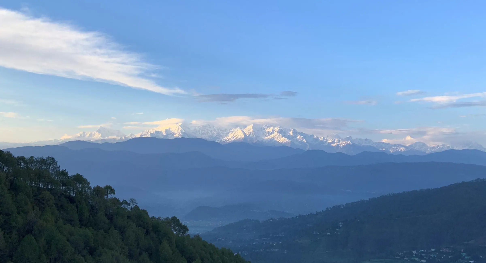
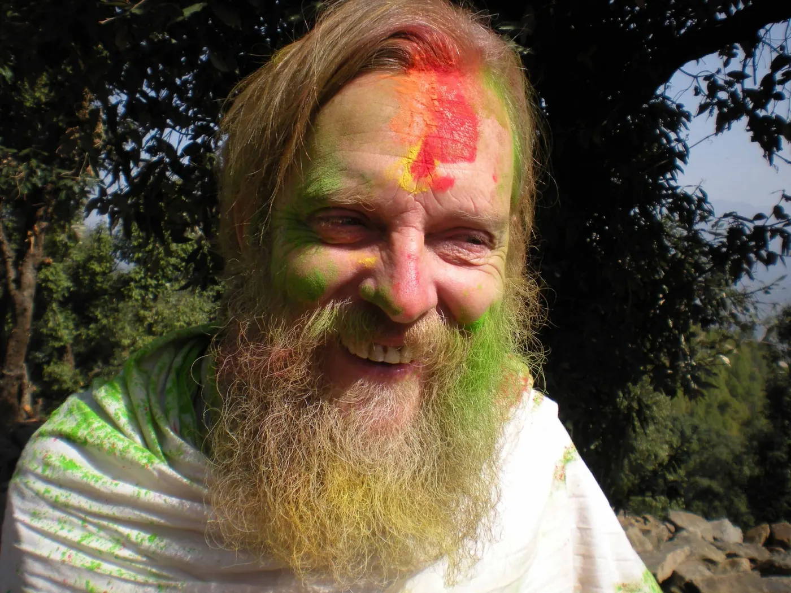
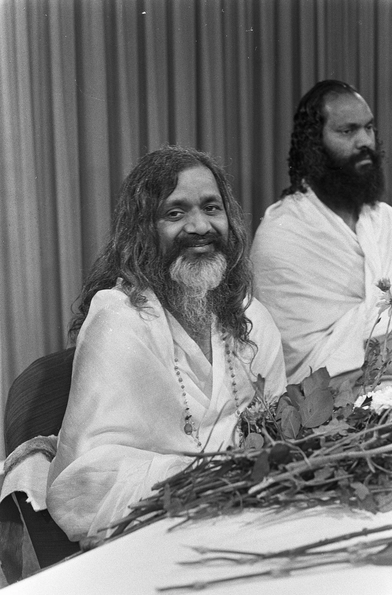
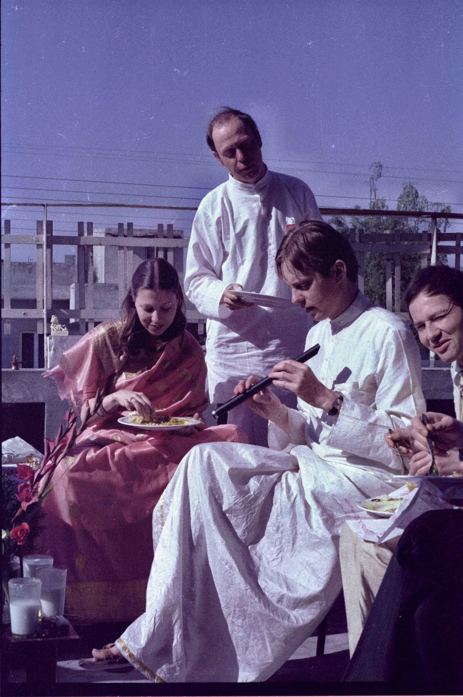
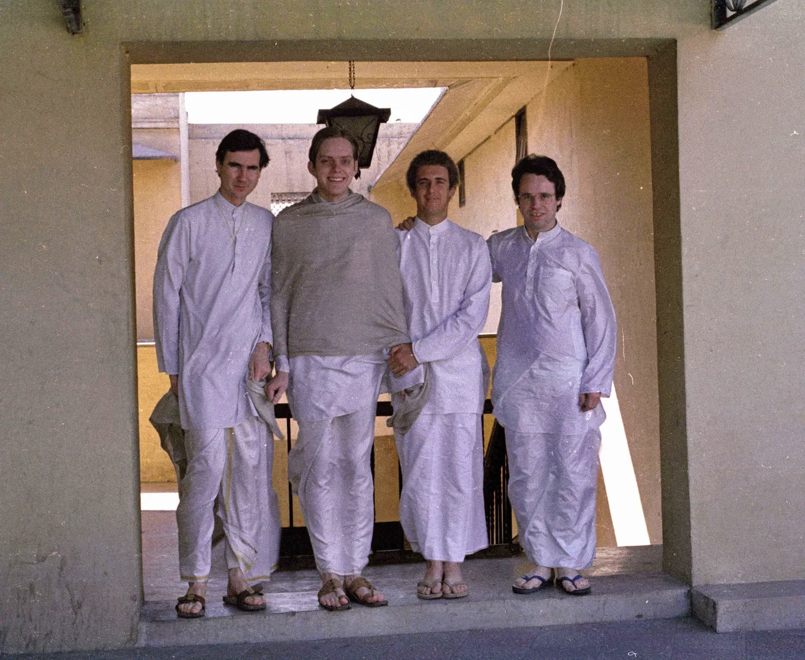
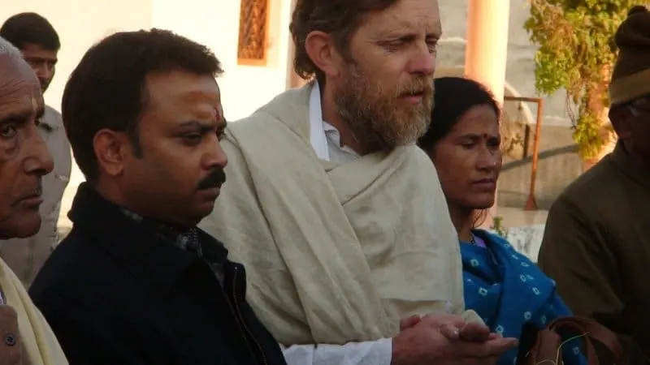
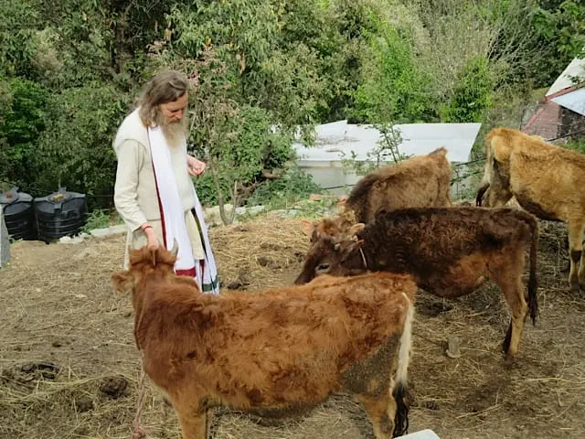

HomeAbout · Founder
जय गुरु देवAshutosh Urs Strobel
From Basel to the Himalaya: a life given to Maharishi's vision of a Vedic India.


“This was it.”
Yoga had been part of his daily routine since he was ten. After years of searching he found Transcendental Meditation in 1970, and in December 1973 he left everything to go to Maharishi Mahesh Yogi.
Since January 1996 he has lived full time in India, and he became an Indian citizen in 2011. He runs the Vedic ashram in Kausani with one goal: to create again a Vedic atmosphere in the home of the Veda, the Himalaya.
Visitors describe a man who built the ashram “out of nothing”, with a great sense of humour and endless stories from the era of Maharishi. They say he supervises every detail in a graceful, gentle but efficient way.
The journey
- 1954
Born in Basel
Born in Basel, Switzerland. He earned his Diploma in Analytical Chemistry there in 1973, but his deep focus was always yoga and Indian philosophy.
- 1973
With Maharishi
Under Maharishi's guidance he trained in many fields, did EEG research at Maharishi European Research University, became a teacher of TM and guided thousands of people.
- 1980
First time in India
In November 1980 he came to India for Maharishi's Vedic Science course at the Indian Express building, New Delhi. In October 1981 he became a founding member of Maharishi's “Sahasrashirsha Purusha”.
- 1986
Rasaśāstra, Veda, Upaniṣads
He studied and researched Rasaśāstra under Rajvaidya Vasudev Mulch and Dwivedi, partly in India from 1986 to 1988. Years of long meditation and study of the Veda and Upaniṣads followed at Maharishi Vedic University in Holland, along with teaching Sanskrit fundamentals in Florida.
- 1996
Home in the Himalaya
Full time in India from January 1996. Maharishi asked him to dedicate himself to the Himalayan region. He started Vedic schools, then the main ashram in Kausani, and became a citizen of India in 2011.
Maharishi Mahesh Yogi
“Life finds its purpose and fulfilment in the expansion of happiness.”
From 1955 Maharishi taught Transcendental Meditation all over the world, reviving what Ashutosh ji calls the most important, most ancient and most effective aspect of the Vedic tradition. He also brought the technique into modern scientific research. Everything at Anāmay, from the Vidyapeeth's curriculum to the daily routine of guests, follows his vision.
About meditation →
Maharishi Mahesh Yogi on arrival at Schiphol, Netherlands (Nationaal Archief) · Photo: Ben Merk / Anefo, CC0 via Wikimedia CommonsInterviews and talks
In these interviews, recorded by Bjorn and Maria from Iceland, Ashutosh ji tells how Maharishi asked him to come to India. He talks about the value of the Himalaya for spiritual life, Vāstu housing and food self-sufficiency. There is also his lecture at MIT-World Peace University, Pune.



